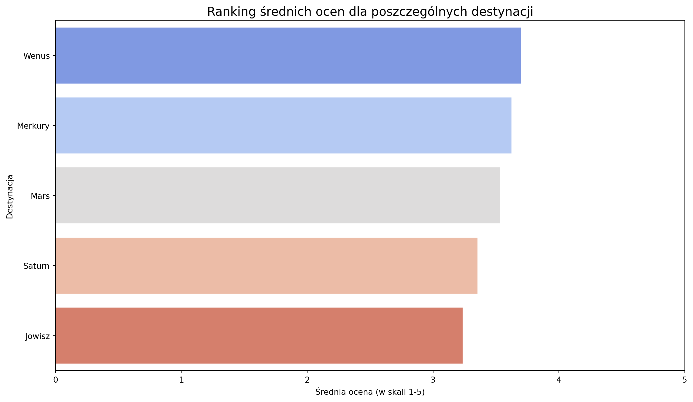
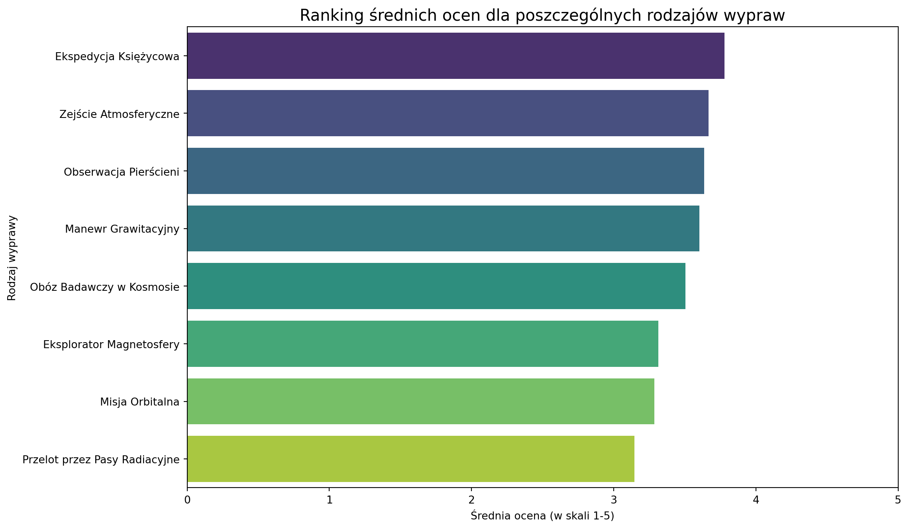

W bezkresie kosmosu, podobnie jak w oceanie danych, kluczem do sukcesu jest precyzyjna nawigacja. Od ponad dekady misją Space-U jest nie tylko otwieranie ludzkości drogi do gwiazd, ale również prowadzenie tej ekspansji w sposób mądry, zrównoważony i rentowny. Rok 2034 był kolejnym kamieniem milowym na naszej orbicie sukcesu – rokiem, w którym umocniliśmy naszą pozycję lidera, wysłaliśmy rekordową liczbę pasażerów ku czerwonym piaskom Marsa i zorzom Jowisza, ale także zmierzyliśmy się z nowymi, nieprzewidzianymi wyzwaniami.
Niniejszy raport jest naszą mapą nawigacyjną po minionym roku. Z kosmiczną precyzją przeanalizowaliśmy zebrane dane, aby odpowiedzieć na fundamentalne pytania. Które trajektorie lotów przynoszą największe zyski? Jak zmienia się profil demograficzny naszych międzyplanetarnych podróżników? Gdzie leżą ukryte ryzyka operacyjne – czy to w pasie asteroid, czy w awaryjności naszych statków? I wreszcie – jak odczucia i oceny naszych klientów korelują z incydentami napotkanymi w drodze na orbitę?
Celem tego dokumentu nie jest jedynie kronikarski zapis przeszłości. To przede wszystkim kompas, który ma wskazać kierunek przyszłych działań. Wnioski tu zawarte stanowią solidny, oparty na twardych danych fundament pod strategiczne decyzje, które wyznaczą kurs Space-U na kolejne lata. Informacje te pozwolą nam nie tylko optymalizować obecne operacje, ale także odkrywać zupełnie nowe konstelacje możliwości rynkowych.
Zapnijcie pasy. Wyruszamy w podróż po danych, która ukształtuje przyszłość międzyplanetarnych podróży.
Analiza danych
Analiza rentowności i popularności wypraw
W tej kluczowej sekcji raportu dokonujemy szczegółowego przeglądu naszego portfolio usług. Naszym celem jest precyzyjne zidentyfikowanie, które rodzaje wypraw stanowią trzon naszej oferty – ciesząc się największym zainteresowaniem klientów – oraz, co najważniejsze, jak popularność ta przekłada się na wyniki finansowe. Zrozumienie rentowności poszczególnych “produktów” jest fundamentem do podejmowania świadomych decyzji o alokacji zasobów, strategii cenowej i przyszłych inwestycjach w rozwój floty oraz nowych tras.
Analiza została przeprowadzona na podstawie pełnych danych operacyjnych i finansowych z czterech lat działalności naszej firmy. Wykorzystaliśmy do tego bezpośrednie zapytanie do naszej centralnej bazy danych, agregując informacje o liczbie lotów, całkowitych kosztach misji oraz skompletowanych transakcjach.
Kod
query ="""SELECT tt.name AS 'Rodzaj wyprawy', COUNT(t.trip_id) AS 'Liczba wypraw', COALESCE(SUM(ac.total_trip_cost), 0) AS 'Całkowite koszty', COALESCE(SUM(ar.total_trip_revenue), 0) AS 'Całkowite przychody', (COALESCE(SUM(ar.total_trip_revenue), 0) - COALESCE(SUM(ac.total_trip_cost), 0)) AS 'Zysk'FROM trip_types ttLEFT JOIN trips t ON tt.trip_type_id = t.trip_type_idLEFT JOIN (SELECT trip_id, SUM(cost_amount) AS total_trip_cost FROM costs GROUP BY trip_id) ac ON t.trip_id = ac.trip_idLEFT JOIN (SELECT trip_id, SUM(amount) AS total_trip_revenue FROM transactions WHERE status = 'Completed' GROUP BY trip_id) ar ON t.trip_id = ar.trip_idGROUP BY tt.nameORDER BY `Liczba wypraw` DESC;"""
Poniższa tabela prezentuje kompleksowe zestawienie kluczowych wskaźników dla każdego typu wyprawy
Liderzy Popularności
Nasze dane jednoznacznie wskazują na grupę flagowych produktów, które stanowią o sile naszej marki. Poniżej przedstawiamy TOP 3 najchętniej wybierane wyprawy:
Obóz Badawczy w Kosmosie: zrealizowano 19 wypraw, które przyniosły 14,249,450,059.53 zł przychodu.
Ekspedycja Księżycowa: zrealizowano 14 wypraw, które przyniosły 5,029,421,477.95 zł przychodu.
Eksplorator Magnetosfery: zrealizowano 13 wypraw, które przyniosły 4,295,480,338.34 zł przychodu.
Analiza Rentowności
Doskonałe wieści: W analizowanym okresie wszystkie oferowane przez Space-U rodzaje wypraw okazały się rentowne. To świadczy o zdrowej strukturze kosztów i dobrze skalibrowanej polityce cenowej w całym naszym portfolio.
Analiza Dynamiki Bazy Klientów
Analiza miesięcznej liczby obsłużonych klientów jest jednym z fundamentalnych wskaźników kondycji i tempa rozwoju Space-U. To puls naszej działalności, który pozwala ocenić skuteczność naszych działań marketingowych, atrakcyjność oferty oraz ogólne zainteresowanie podróżami kosmicznymi. W tej sekcji zbadamy, czy w ostatnim roku nasza firma znajdowała się na trajektorii wzrostowej, czy też napotkała na turbulencje.
Aby odpowiedzieć na to pytanie, stworzyliśmy wizualizację przedstawiającą liczbę unikalnych klientów w każdym miesiącu. Zamiast polegać na subiektywnej ocenie, nałożyliśmy na dane linię trendu opartą na regresji liniowej, która w obiektywny sposób wskazuje kierunek, w którym zmierzamy.
Kod
query_clients_per_month ="""SELECT DATE_FORMAT(t.departure_datetime, '%Y-%m') AS miesiac, COUNT(tp.client_id) AS liczba_klientowFROM trips tJOIN trip_participants tp ON t.trip_id = tp.trip_idGROUP BY miesiacORDER BY miesiac ASC;"""
x = np.arange(len(df_clients)) y = df_clients['liczba_klientow'] slope, intercept, r_value, p_value, std_err = stats.linregress(x, y)stagnation_threshold =0.5if slope > stagnation_threshold: wniosek =f"Firma wykazuje wyraźny trend WZROSTOWY." szczegoly =f"Średnio, z każdym miesiącem liczba klientów rośnie o {slope:.2f}."elif slope <-stagnation_threshold: wniosek =f"Firma wykazuje wyraźny trend SPADKOWY." szczegoly =f"Średnio, z każdym miesiącem liczba klientów maleje o {-slope:.2f}."else: wniosek ="Firma wykazuje STAGNACJĘ." szczegoly =f"Brak wyraźnego trendu wzrostowego lub spadkowego (nachylenie linii trendu wynosi {slope:.2f})."
Poniższy wykres prezentuje miesięczne dane wraz z wygładzoną linią trendu (średnia krocząca), która pomaga zwizualizować ogólną tendencję.
Kod
analiza_markdown =f"""### Ocena Linii Trendu <p>Analiza statystyczna oparta na regresji liniowej pozwala nam obiektywnie ocenić kierunek rozwoju firmy. Współczynnik nachylenia linii trendu to matematyczna reprezentacja naszego miesięcznego wzrostu lub spadku.</p><p><b>Wniosek: {wniosek}</b></p><p>{szczegoly}</p>"""display(Markdown(analiza_markdown))
Ocena Linii Trendu
Analiza statystyczna oparta na regresji liniowej pozwala nam obiektywnie ocenić kierunek rozwoju firmy. Współczynnik nachylenia linii trendu to matematyczna reprezentacja naszego miesięcznego wzrostu lub spadku.
Wniosek: Firma wykazuje wyraźny trend WZROSTOWY.
Średnio, z każdym miesiącem liczba klientów rośnie o 0.90.
Analiza ryzyka operacyjnego
Zarządzanie ryzykiem w turystyce kosmicznej to nie tylko nasz obowiązek, ale fundament, na którym opiera się zaufanie naszych klientów i partnerów. W tej części raportu dokonujemy dogłębnej analizy dwóch głównych źródeł ryzyka: niebezpieczeństw związanych z celem podróży oraz potencjalnej awaryjności naszych statków kosmicznych. Celem jest identyfikacja “gorących punktów”, która pozwoli na wdrożenie działań prewencyjnych i podniesienie standardów bezpieczeństwa.
Ryzyko związane z destynacja
Każda destynacja w Układzie Słonecznym posiada unikalną charakterystykę i wiąże się z różnym poziomem wyzwań. Poniższy wykres przedstawia liczbę zarejestrowanych incydentów w podziale na lokalizacje oraz stopień ich powagi (niski, średni, wysoki).
Kod
query_incidents_graph ="""SELECT d.name AS kierunek, i.severity, COUNT(i.incident_id) AS liczba_incydentowFROM incidents iJOIN trips t ON i.trip_id = t.trip_idJOIN destinations d ON t.destination_id = d.destination_idWHERE i.severity IN ('high', 'medium', 'low')GROUP BY d.name, i.severity"""
df_total_incidents = df_incidents_long.groupby('kierunek')['liczba_incydentow'].sum().sort_values(ascending=False)df_incidents_long['kierunek_sorted'] = pd.Categorical(df_incidents_long['kierunek'], categories=df_total_incidents.index, ordered=True)fig = px.bar( df_incidents_long.sort_values('kierunek_sorted'), x='kierunek_sorted', y='liczba_incydentow', color='severity', title='Liczba incydentów ze względu na destynację', labels={'kierunek_sorted': 'Destynacja', 'liczba_incydentow': 'Łączna liczba incydentów', 'severity': 'Poziom zagrożenia'}, color_discrete_map={'low': '#5cb85c', 'medium': '#f0ad4e', 'high': '#d9534f'}, category_orders={'severity': ['low', 'medium', 'high']})fig.show()
Sama liczba incydentów może być jednak myląca – popularna destynacja naturalnie odnotuje więcej zdarzeń. Aby uzyskać bardziej obiektywny obraz, stworzyliśmy ważony wskaźnik ryzyka. Przypisuje on punkty za każdy incydent w zależności od jego wagi (10 pkt za “High”, 3 za “Medium”, 1 za “Low”), a następnie dzieli sumę punktów przez liczbę wypraw do danej lokalizacji. Wynik pokazuje średnie “obciążenie ryzykiem” na jedną wyprawę.
Kod
query_weighted_risk ="""WITH trips_per_destination AS ( SELECT destination_id, COUNT(trip_id) AS total_trips FROM trips GROUP BY destination_id),weighted_incidents AS ( SELECT t.destination_id, SUM( CASE WHEN i.severity = 'High' THEN 10 WHEN i.severity = 'Medium' THEN 3 WHEN i.severity = 'Low' THEN 1 ELSE 0 END ) AS risk_score FROM incidents i JOIN trips t ON i.trip_id = t.trip_id GROUP BY t.destination_id)SELECT d.name AS Kierunek, COALESCE(tpd.total_trips, 0) AS Liczba_wypraw, COALESCE(wi.risk_score, 0) AS Suma_punktow_ryzyka, COALESCE(wi.risk_score / tpd.total_trips, 0) AS Wazony_wspolczynnik_ryzykaFROM destinations dLEFT JOIN trips_per_destination tpd ON d.destination_id = tpd.destination_idLEFT JOIN weighted_incidents wi ON d.destination_id = wi.destination_idWHERE tpd.total_trips > 0ORDER BY Wazony_wspolczynnik_ryzyka DESC;"""
most_risky = df_risk.iloc[0]least_risky = df_risk.iloc[-1]wniosek_markdown =f"""### Podsumowanie Ryzyka Destynacji<p>Nasz ważony wskaźnik pozwala na obiektywną ocenę i priorytetyzację działań mitygujących ryzyko.</p><ul> <li><span style="font-size: 1.5em;"></span> <b>Najwyższe ryzyko:</b> Destynacją o najwyższym wskaźniku ryzyka jest <b>{most_risky['Kierunek']}</b> z wynikiem <b>{most_risky['Wazony_wspolczynnik_ryzyka']:.2f} pkt</b> na wyprawę. Sugeruje to konieczność przeglądu procedur bezpieczeństwa dla tej trasy.</li> <li><span style="font-size: 1.5em;"></span> <b>Najniższe ryzyko:</b> Najbezpieczniejszą z naszych popularnych destynacji okazał/a się <b>{least_risky['Kierunek']}</b> ({least_risky['Wazony_wspolczynnik_ryzyka']:.2f} pkt/wyprawę). Praktyki stosowane na tej trasie mogą stanowić wzór dla innych.</li></ul>"""display(Markdown(wniosek_markdown))
Podsumowanie Ryzyka Destynacji
Nasz ważony wskaźnik pozwala na obiektywną ocenę i priorytetyzację działań mitygujących ryzyko.
Najwyższe ryzyko: Destynacją o najwyższym wskaźniku ryzyka jest Merkury z wynikiem 3.37 pkt na wyprawę. Sugeruje to konieczność przeglądu procedur bezpieczeństwa dla tej trasy.
Najniższe ryzyko: Najbezpieczniejszą z naszych popularnych destynacji okazał/a się Wenus (1.48 pkt/wyprawę). Praktyki stosowane na tej trasie mogą stanowić wzór dla innych.
Ryzyko związane ze sprzętem
Nawet najbezpieczniejsza trasa staje się ryzykowna, jeśli statek kosmiczny jest zawodny. W tej części analizujemy dane dotyczące awarii sprzętu (category = ‘equipment’) w naszej flocie, aby zidentyfikować jednostki wymagające szczególnej uwagi serwisowej. Poniższy wykres szereguje statki według wskaźnika “usterki na wyprawę”.
Kod
query_failure_rate ="""WITH trips_per_spacecraft AS ( SELECT spacecraft_id, COUNT(trip_id) AS total_trips FROM trips GROUP BY spacecraft_id),equipment_failures AS ( SELECT t.spacecraft_id, COUNT(i.incident_id) AS total_failures FROM incidents i JOIN trips t ON i.trip_id = t.trip_id WHERE i.category = 'equipment' GROUP BY t.spacecraft_id)SELECT s.name AS nazwa_statku, COALESCE(tps.total_trips, 0) AS liczba_wypraw, COALESCE(ef.total_failures, 0) AS liczba_usterek, CASE WHEN tps.total_trips > 0 THEN COALESCE(ef.total_failures, 0) / CAST(tps.total_trips AS FLOAT) ELSE 0 END AS usterki_na_wypraweFROM spacecraft sLEFT JOIN trips_per_spacecraft tps ON s.spacecraft_id = tps.spacecraft_idLEFT JOIN equipment_failures ef ON s.spacecraft_id = ef.spacecraft_idORDER BY usterki_na_wyprawe DESC;"""
most_failure_prone = df_failure_rate.iloc[0]zero_failure_ships = df_failure_rate[df_failure_rate['usterki_na_wyprawe'] ==0]count_zero_failure =len(zero_failure_ships)wniosek_markdown ="""### Ocena Niezawodności Floty<p>Analiza wskaźnika usterek pozwala na precyzyjne planowanie przeglądów serwisowych i alokację budżetu na utrzymanie floty.</p><ul>"""liczba_usterek_prone =int(most_failure_prone['liczba_usterek'])liczba_wypraw_prone =int(most_failure_prone['liczba_wypraw'])wniosek_markdown +=f"""<li><b>Wymaga uwagi:</b> Najbardziej podatny na usterki sprzętowe jest statek <b>{most_failure_prone['nazwa_statku']}</b>. Odnotowuje on średnio <b>{most_failure_prone['usterki_na_wyprawe']:.3f} usterki</b> na każdą odbytą wyprawę. <br><small style="color: #6c757d;"><i>(Na podstawie {liczba_usterek_prone} usterek w ciągu {liczba_wypraw_prone} wypraw)</i></small></li>"""workhorse_champion = zero_failure_ships.sort_values('liczba_wypraw', ascending=False).iloc[0]liczba_wypraw_champion =int(workhorse_champion['liczba_wypraw'])wniosek_markdown +=f"""<li><b>Wzór niezawodności:</b> Aż <b>{count_zero_failure} jednostek</b> w naszej flocie zakończyło wszystkie misje w analizowanym okresie bez żadnej usterki sprzętowej.Na szczególne wyróżnienie zasługuje <b>{workhorse_champion['nazwa_statku']}</b>, który jest najczęściej eksploatowaną jednostką w tej grupie.<br><small style="color: #6c757d;"><i>(Wykonał bezawaryjnie aż {liczba_wypraw_champion} misji)</i></small></li>"""wniosek_markdown +="</ul>"display(Markdown(wniosek_markdown))
Ocena Niezawodności Floty
Analiza wskaźnika usterek pozwala na precyzyjne planowanie przeglądów serwisowych i alokację budżetu na utrzymanie floty.
Wymaga uwagi: Najbardziej podatny na usterki sprzętowe jest statek Zenith-Prime. Odnotowuje on średnio 0.250 usterki na każdą odbytą wyprawę. (Na podstawie 3 usterek w ciągu 12 wypraw)
Wzór niezawodności: Aż 25 jednostek w naszej flocie zakończyło wszystkie misje w analizowanym okresie bez żadnej usterki sprzętowej. Na szczególne wyróżnienie zasługuje Astra-Core, który jest najczęściej eksploatowaną jednostką w tej grupie. (Wykonał bezawaryjnie aż 7 misji)
Wpływ incydentów na satysfakcję klienta
W tej części analizy łączymy “twarde” dane operacyjne z “miękkimi” danymi dotyczącymi odczuć naszych pasażerów. Stawiamy fundamentalne pytanie: czy liczba incydentów zarejestrowanych podczas wyprawy ma statystycznie istotny wpływ na jej końcową ocenę?
Intuicja podpowiada, że każda, nawet drobna usterka czy incydent, może negatywnie wpłynąć na postrzeganie całej, skądinąd udanej, wyprawy. Potwierdzenie lub obalenie tej tezy ma kluczowe znaczenie dla zrozumienia, jak krytyczne jest zapewnienie bezproblemowego przebiegu misji nie tylko dla bezpieczeństwa, ale i dla reputacji oraz siły naszej marki.
Poniższy wykres punktowy przedstawia zależność między średnią oceną danej wyprawy a liczbą odnotowanych w jej trakcie incydentów. Czerwona linia trendu wizualizuje ogólną tendencję tej zależności.
Kod
query_correlation ="""WITH avg_ratings AS ( SELECT trip_id, AVG(rating) AS avg_rating FROM feedback GROUP BY trip_id),incident_counts AS ( SELECT trip_id, COUNT(incident_id) AS incident_count FROM incidents GROUP BY trip_id)SELECT t.trip_id, ar.avg_rating AS srednia_ocena, COALESCE(ic.incident_count, 0) AS liczba_incydentowFROM trips tJOIN avg_ratings ar ON t.trip_id = ar.trip_idLEFT JOIN incident_counts ic ON t.trip_id = ic.trip_id;"""
fig = px.scatter( df_correlation, x='liczba_incydentow', y='srednia_ocena', title='Zależność Oceny Wyprawy od Liczby Incydentów', labels={'liczba_incydentow': 'Liczba incydentów podczas wyprawy','srednia_ocena': 'Średnia ocena wyprawy (1-5)' }, trendline='ols', trendline_color_override='#e74c3c')fig.update_layout( plot_bgcolor='white', xaxis_gridcolor='#ecf0f1', yaxis_gridcolor='#ecf0f1')max_incidents =int(df_correlation['liczba_incydentow'].max())fig.update_xaxes( dtick=1,range=[-0.5, max_incidents +0.5])fig.show()
Kod
correlation_coeff = df_correlation['srednia_ocena'].corr(df_correlation['liczba_incydentow'])# Logika wnioskówif correlation_coeff <-0.5: wniosek ="Istnieje silna korelacja ujemna." szczegoly ="Wzrost liczby incydentów jest silnie powiązany ze spadkiem średniej oceny wyprawy."elif correlation_coeff <-0.2: wniosek ="Istnieje zauważalna korelacja ujemna." szczegoly ="Wzrost liczby incydentów ma tendencję do obniżania średniej oceny wyprawy."else: wniosek ="Brak silnej korelacji." szczegoly ="Liczba incydentów nie wydaje się mieć decydującego wpływu na ocenę końcową. Klienci prawdopodobnie biorą pod uwagę inne czynniki, takie jak widoki, jakość obsługi czy profesjonalizm załogi w radzeniu sobie z incydentem."
Obliczony współczynnik korelacji Pearsona dla badanych zmiennych wynosi: -0.764.
Wniosek: Istnieje silna korelacja ujemna.
Wzrost liczby incydentów jest silnie powiązany ze spadkiem średniej oceny wyprawy.
Problem piąty
Pytanie: Jakie destynacje i rodzaje wycieczek otrzymują najlepsze oceny?
Kod
query_dest_ratings ="""SELECT d.name AS kierunek, AVG(f.rating) AS srednia_ocena, COUNT(f.rating) AS liczba_ocenFROM feedback fJOIN trips t ON f.trip_id = t.trip_idJOIN destinations d ON t.destination_id = d.destination_idWHERE f.rating IS NOT NULLGROUP BY d.nameHAVING COUNT(f.rating) > 2ORDER BY srednia_ocena DESC;"""
print("\n--- ⭐ Ranking Ocen Destynacji ---")best_dest = df_dest_ratings.iloc[0]worst_dest = df_dest_ratings.iloc[-1]print(f"\n🥇 Najwyżej oceniana destynacja: '{best_dest['kierunek']}'")print(f" -> Średnia ocena: {best_dest['srednia_ocena']:.2f} na podstawie {int(best_dest['liczba_ocen'])} opinii.")print(f"\n📉 Najniżej oceniana destynacja: '{worst_dest['kierunek']}'")print(f" -> Średnia ocena: {worst_dest['srednia_ocena']:.2f} na podstawie {int(worst_dest['liczba_ocen'])} opinii.")
--- ⭐ Ranking Ocen Destynacji ---
🥇 Najwyżej oceniana destynacja: 'Wenus'
-> Średnia ocena: 3.70 na podstawie 528 opinii.
📉 Najniżej oceniana destynacja: 'Jowisz'
-> Średnia ocena: 3.23 na podstawie 465 opinii.
Kod
plt.figure(figsize=(12, 7))sns.barplot(data=df_dest_ratings, x='srednia_ocena', y='kierunek', palette='coolwarm')plt.title('Ranking średnich ocen dla poszczególnych destynacji', fontsize=15)plt.xlabel('Średnia ocena (w skali 1-5)')plt.ylabel('Destynacja')plt.xlim(0, 5)plt.tight_layout()plt.show()
C:\Users\rafal\AppData\Local\Temp\ipykernel_20068\1199124194.py:2: FutureWarning:
Passing `palette` without assigning `hue` is deprecated and will be removed in v0.14.0. Assign the `y` variable to `hue` and set `legend=False` for the same effect.

Kod
query_type_ratings ="""SELECT tt.name AS typ_wyprawy, AVG(f.rating) AS srednia_ocena, COUNT(f.rating) AS liczba_ocenFROM feedback fJOIN trips t ON f.trip_id = t.trip_idJOIN trip_types tt ON t.trip_type_id = tt.trip_type_idWHERE f.rating IS NOT NULLGROUP BY tt.nameHAVING COUNT(f.rating) > 2ORDER BY srednia_ocena DESC;"""
print("\n--- ⭐ Ranking Ocen Rodzajów Wypraw ---")best_type = df_type_ratings.iloc[0]worst_type = df_type_ratings.iloc[-1]print(f"\n🥇 Najwyżej oceniany typ wyprawy: '{best_type['typ_wyprawy']}'")print(f" -> Średnia ocena: {best_type['srednia_ocena']:.2f} na podstawie {int(best_type['liczba_ocen'])} opinii.")print(f"\n📉 Najniżej oceniany typ wyprawy: '{worst_type['typ_wyprawy']}'")print(f" -> Średnia ocena: {worst_type['srednia_ocena']:.2f} na podstawie {int(worst_type['liczba_ocen'])} opinii.")
--- ⭐ Ranking Ocen Rodzajów Wypraw ---
🥇 Najwyżej oceniany typ wyprawy: 'Ekspedycja Księżycowa'
-> Średnia ocena: 3.78 na podstawie 189 opinii.
📉 Najniżej oceniany typ wyprawy: 'Przelot przez Pasy Radiacyjne'
-> Średnia ocena: 3.15 na podstawie 75 opinii.
Kod
plt.figure(figsize=(12, 7))sns.barplot(data=df_type_ratings, x='srednia_ocena', y='typ_wyprawy', palette='viridis')plt.title('Ranking średnich ocen dla poszczególnych rodzajów wypraw', fontsize=15)plt.xlabel('Średnia ocena (w skali 1-5)')plt.ylabel('Rodzaj wyprawy')plt.xlim(0, 5)plt.tight_layout()plt.show()
C:\Users\rafal\AppData\Local\Temp\ipykernel_20068\344212182.py:2: FutureWarning:
Passing `palette` without assigning `hue` is deprecated and will be removed in v0.14.0. Assign the `y` variable to `hue` and set `legend=False` for the same effect.

Problem szósty
Pytanie: Jaka jest struktura wieku naszych klientów?
Kod
query_dob ="""SELECT date_of_birthFROM clientsWHERE date_of_birth IS NOT NULL;"""
query_rfm =f"""WITH Monetary AS ( SELECT client_id, SUM(amount) AS monetary_value FROM transactions WHERE status = 'Completed' AND transaction_date <= '{analysis_date}' GROUP BY client_id),RecencyFrequency AS ( SELECT p.client_id, MAX(t.departure_datetime) AS last_trip_date, COUNT(DISTINCT p.trip_id) AS frequency FROM trip_participants p JOIN trips t ON p.trip_id = t.trip_id WHERE t.departure_datetime <= '{analysis_date}' GROUP BY p.client_id)SELECT c.client_id, c.first_name, c.last_name, DATEDIFF('{analysis_date}', rf.last_trip_date) AS recency_days, COALESCE(rf.frequency, 0) AS frequency, COALESCE(m.monetary_value, 0) AS monetaryFROM clients cLEFT JOIN RecencyFrequency rf ON c.client_id = rf.client_idLEFT JOIN Monetary m ON c.client_id = m.client_id;"""
C:\Users\rafal\AppData\Local\Temp\ipykernel_20068\1405736794.py:2: FutureWarning:
A value is trying to be set on a copy of a DataFrame or Series through chained assignment using an inplace method.
The behavior will change in pandas 3.0. This inplace method will never work because the intermediate object on which we are setting values always behaves as a copy.
For example, when doing 'df[col].method(value, inplace=True)', try using 'df.method({col: value}, inplace=True)' or df[col] = df[col].method(value) instead, to perform the operation inplace on the original object.
print(f"--- 📊 Analiza RFM (stan na dzień: {analysis_date}) ---")print("\nPrzykładowe dane po segmentacji:")print(df_rfm[['first_name', 'last_name', 'recency_days', 'frequency', 'monetary', 'R_score', 'F_score', 'M_score', 'Segment']].head().to_string())print("\n"+"="*50+"\n")plt.figure(figsize=(12, 8))segment_counts = df_rfm['Segment'].value_counts()sns.barplot(x=segment_counts.index, y=segment_counts.values, palette='viridis')plt.title('Rozkład Klientów w Segmentach RFM', fontsize=16)plt.xlabel('Segment', fontsize=12)plt.ylabel('Liczba Klientów', fontsize=12)plt.xticks(rotation=45, ha='right')plt.tight_layout()plt.show()
C:\Users\rafal\AppData\Local\Temp\ipykernel_20068\1599623877.py:8: FutureWarning:
Passing `palette` without assigning `hue` is deprecated and will be removed in v0.14.0. Assign the `x` variable to `hue` and set `legend=False` for the same effect.
print("\n\n"+"="*60)print("--- Zautomatyzowane Podsumowanie Analizy Segmentacji RFM ---")print("="*60)print("\n## Podsumowanie ilościowe segmentów:\n")segment_counts = df_rfm['Segment'].value_counts()total_clients =len(df_rfm)for segment, count in segment_counts.items(): percentage = (count / total_clients) *100print(f"- {segment}: \t{count} klientów ({percentage:.1f}% wszystkich)")print("\n\n## Rekomendacje Biznesowe dla Firmy:\n")recommendations = {'Mistrzowie (Champions)': "To Twoi najcenniejsi klienci. Angażuj ich, proś o opinie i recenzje, ""zaoferuj programy lojalnościowe i dostęp do ekskluzywnych ofert. ""Są ambasadorami Twojej marki.",'Lojalni Klienci': "Są kręgosłupem Twojej firmy. Podtrzymuj ich zaangażowanie, oferując ""nowe produkty (cross-selling), lepsze wersje wypraw (up-selling) ""i budując z nimi długotrwałą relację.",'Ryzykowni (At Risk)': "KLUCZOWA GRUPA DO REAKTYWACJI! To byli dobrzy klienci, którzy dawno ""nic nie kupili. Skontaktuj się z nimi osobiście, zaoferuj spersonalizowaną ""zniżkę 'na powrót' i dowiedz się, dlaczego przestali podróżować.",'Wieloryby (Big Spenders)':"Wydają dużo, ale niekoniecznie często. Upewnij się, że są zadowoleni ""z jakości usług. Mogą być podatni na oferty konkurencji. Warto zadbać ""o ich satysfakcję.",'Nowi Klienci':"Pierwsze wrażenie jest kluczowe. Zapewnij im doskonałe doświadczenie ""na pokładzie i stwórz spersonalizowaną ścieżkę komunikacji (np. seria maili), ""aby zachęcić ich do drugiej podróży i zamienić w lojalnych klientów.",'Hibernujący':"Duża grupa nieaktywnych klientów. Jeśli ich liczba jest znacząca, rozważ ""szeroko zakrojoną, ale niskokosztową kampanię 'Tęsknimy za Tobą!' z atrakcyjną ""ofertą. Nie inwestuj w nich tyle, co w segment 'Ryzykowni'."}for segment in segment_counts.index:if segment in recommendations:print(f"💡 Segment: {segment}")print(f" Rekomendacja: {recommendations[segment]}\n")print("="*60)
============================================================
--- Zautomatyzowane Podsumowanie Analizy Segmentacji RFM ---
============================================================
## Podsumowanie ilościowe segmentów:
- Hibernujący: 174 klientów (29.0% wszystkich)
- Ryzykowni (At Risk): 111 klientów (18.5% wszystkich)
- Lojalni Klienci: 98 klientów (16.3% wszystkich)
- Mistrzowie (Champions): 91 klientów (15.2% wszystkich)
- Pozostali: 87 klientów (14.5% wszystkich)
- Nowi Klienci: 39 klientów (6.5% wszystkich)
## Rekomendacje Biznesowe dla Firmy:
💡 Segment: Hibernujący
Rekomendacja: Duża grupa nieaktywnych klientów. Jeśli ich liczba jest znacząca, rozważ szeroko zakrojoną, ale niskokosztową kampanię 'Tęsknimy za Tobą!' z atrakcyjną ofertą. Nie inwestuj w nich tyle, co w segment 'Ryzykowni'.
💡 Segment: Ryzykowni (At Risk)
Rekomendacja: KLUCZOWA GRUPA DO REAKTYWACJI! To byli dobrzy klienci, którzy dawno nic nie kupili. Skontaktuj się z nimi osobiście, zaoferuj spersonalizowaną zniżkę 'na powrót' i dowiedz się, dlaczego przestali podróżować.
💡 Segment: Lojalni Klienci
Rekomendacja: Są kręgosłupem Twojej firmy. Podtrzymuj ich zaangażowanie, oferując nowe produkty (cross-selling), lepsze wersje wypraw (up-selling) i budując z nimi długotrwałą relację.
💡 Segment: Mistrzowie (Champions)
Rekomendacja: To Twoi najcenniejsi klienci. Angażuj ich, proś o opinie i recenzje, zaoferuj programy lojalnościowe i dostęp do ekskluzywnych ofert. Są ambasadorami Twojej marki.
💡 Segment: Nowi Klienci
Rekomendacja: Pierwsze wrażenie jest kluczowe. Zapewnij im doskonałe doświadczenie na pokładzie i stwórz spersonalizowaną ścieżkę komunikacji (np. seria maili), aby zachęcić ich do drugiej podróży i zamienić w lojalnych klientów.
============================================================